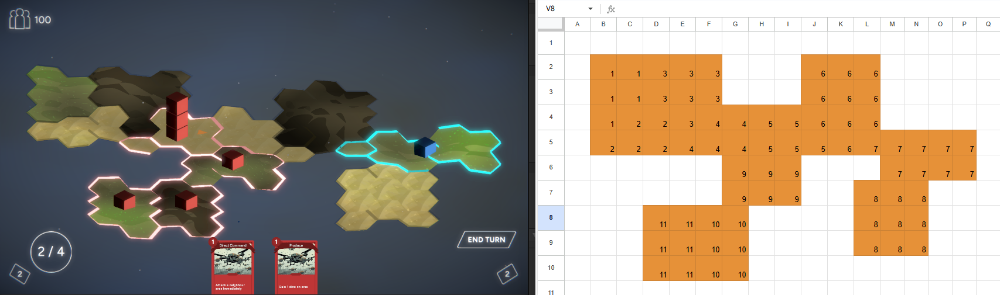

Introduction
I have spent a lot of time of time thinking about how to make a simple and flexible level editor for the strategy game I am making. One aspect of this which I had a hard time getting my head around was how to design a level editor for a game where hexagons make up the level. That is untill I had, it is fair to say, a bit of a revelation:
1. It is possible to represent hexagonal maps with a 2d grid
Evgeniya Glazycheva has this great blog post describing how they generated their hexagonal levels based on a 2d texture of a colored grid. Assuming a vertical hexagonal orientation it is pretty simple to take data from the 2d texture and use it to generate a level.
2. Spreadsheets store data in a grid and can transmit more data than a 2d texture
My only issue with using a 2d texture is that it allows for only very little data to be stored and transfered for each hexagon. The solution to this, which I am stoked about coming up with haha!, is to use a spreadsheet grid instead of a grid drawn on a texture.
3. Enough data can be stored to produce a scriptable object describing a level made of hexagons
Using an online spreadsheet like Google sheets and building scriptable object in Unity(like shown here) give team members access to a colaborative level editor and does not burden me as the programmer with the task of making a level editor in-house. Pew, nice.
